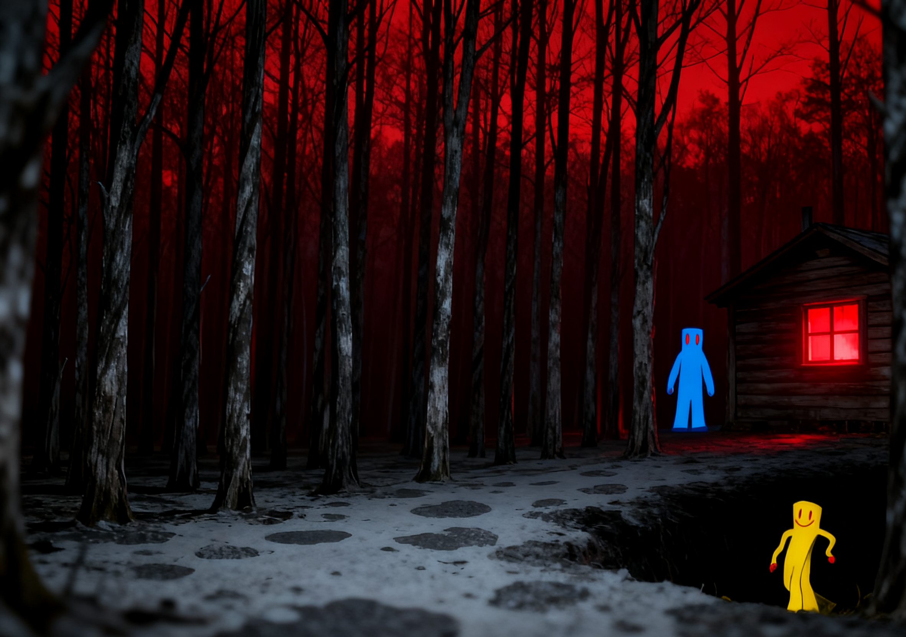
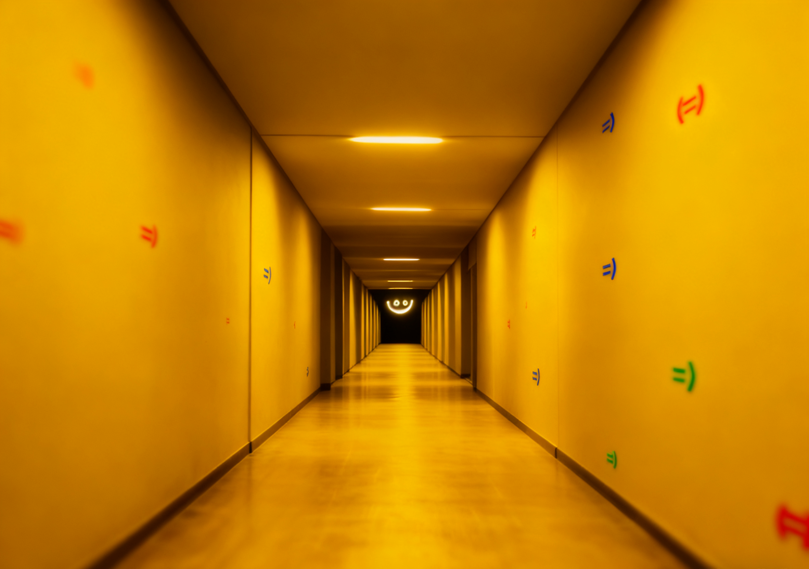

Level !+ - “宜居？” 后门
免责声明
本文的主题中包含较为沉重的精神控制相关的描述。这些内容可能对部分读者造成心理不适。如果相关内容会使你感到烦躁、不适或过激，请直接跳过该层级，或是自行决定是否阅读。
生存难度：生存难度：
等级 别被骗了，是“天堂”级陷阱
- 看起来确实美得冒泡。
- 安静得让你脑子都停转了。
- 完美得不像真的——因为它就是假的。
Level !+ 是一处虚假的天堂天堂。提示，看到请立刻远离！！！
描述

必死无疑的房外树林

派对客的恶意追逐
Level !+ 就是个披着天堂外衣的“洗脑中心”。这里的一切，从空气到光线，都在用一种温柔到令人毛骨悚然的方式，系统地劝你放弃思考，最终变成一个只会微笑的快乐行尸走肉。记住，这里最危险的从来不是明刀明枪，而是那份让你主动卸下防备的“舒适”。
1. 环境是啥样的？为啥说它坑人？
- 乍一看，这里美得像梦境。光线永远是最柔和的黄昏色，没有阴影，没有刺眼的地方。脚下是某种温热的、有生命般微微起伏的柔软地面，踩上去很舒服。但待久了你会发现，这里没有真正的细节：花朵没有纹理，远处的风景像模糊的背景板，整个空间完美得像个廉价的摄影棚。
- 空气中永远飘荡着那种“莫名其妙的歌声”。它没有歌词，只是简单的旋律，但会直接往你脑子里钻。听几分钟你可能觉得放松，但听上半小时，你就会发现自己很难集中精神，过去的记忆开始变得模糊，连“我为什么来这里”都懒得去想了。这歌声就是一个针对你思维的“软化剂”。
- 这里的温暖是恒定的，没有风吹，没有雨打。这种极致的舒适感，会慢慢剥夺你的感官。你会变得对冷热、疼痛、甚至时间流逝都越来越不敏感。这不是享受，这是在把你变成一个对真实世界毫无反应的“废物”。
2. 这里的人咋样？他们到底怎么了？
- 里面的人大部分都是相似的。在这个层级请勿靠近黑暗的地方，那里绝对有笑魇。大部分地方都有可能会存在原住民派对客，如果看见他们请立即远离。
- 你会看到其他人，他们被称为“居民”。他们全都安静地躺着或缓慢地踱步，脸上挂着完全一样的、弧度分毫不差的微笑。一开始你可能会羡慕他们的宁静，但很快你就会感到恐惧：因为他们没有交流，没有个性，甚至没有眼神焦点。你朝他们挥手，他们只会用那个固定的微笑对着你，仿佛一个程序设定好的玩偶。
- 如果你壮着胆子去推他们一下，他们会缓慢地站起来，用那种甜得发腻的语调对你说：“一切都很好，为什么不留下呢？”然后试图牵你的手，带你加入他们。他们的触碰是冰凉的，和他们营造的温暖环境截然不同——这就是他们非人本质的露馅时刻。他们不是放松，他们是被抽走了灵魂，变成了这个层级的一部分。
3. 层级本身的“活”的恶意。
- 这个层级本身似乎是“活”的，它能感知到你的情绪和想法。当你产生怀疑、恐惧或想要离开的念头时，周围的歌声会变得更响、更柔和，空气中的香味也会加重，试图强行“安抚”你，把这些“不好”的念头压下去。
- 地面可能会在你脚下变得更加柔软，让你使不上力，难以快速行动，仿佛整个环境都在温柔地拖住你的后腿，对你说：“别挣扎了，躺下吧。”
Level !+ 就是一个用舒适和安宁包装的精神屠宰场。它不摧毁你的身体，它瞄准的是你的意志和思想。它把你最深的疲惫和绝望当作突破口，诱惑你，然后温柔地、彻底地抹杀掉“你”的存在。如果你还珍惜那个会思考、有情绪、能感到痛苦的自己，如果你还相信“我思故我在”，那么，用尽你最后一丝清醒，远离这里！
基地、前哨和社区
有，但极其诡异。有一群被称为“孩子们”的实体（请不要靠进那些派对客！！！），他们会热情地邀请你参加一场“盛宴”。
说人话：他们想把你同化掉。 他们的“帮忙”，就是把你变得跟他们一样——一个没有自己思想，只会微笑的空壳。他们嘴上说着“不疼”、“只是做些调整”，但信了你就完了。
入口和出口
入口
- 文档没说死，但暗示当你在这个诡异的后室里走到某个地步，精神上感到无比绝望和疲惫时，你“知道”怎么来。说白了，当你最脆弱、最想放弃的时候，这个层级就会诱惑你。
出口
- 说人话：因为你一旦被这里迷惑，脑子就不转了，根本不会产生“我想离开”这个念头。 就是在暗示，出口这个概念本身在这里就已经失效了。想到出口，本身就是一种反抗，而这里的环境会尽全力扼杀你的这种反抗意识。